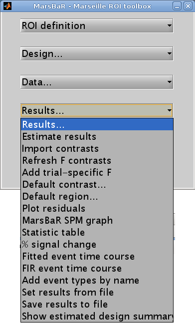

Basic results#
Let us start the assessment by getting some t and F values for the effects in the design. Click on the Results button in the MarsBaR window:
Interface summary - the results menu
- Estimate results
as we know, takes the default design, and the ROI data, and estimates the model. MarsBaR stores the estimated results in memory as the estimated design.
- Import contrasts
gives an interface for you to select contrasts from other analyses, and import them into the list of contrasts for the current analysis.
- Refresh F contrasts
In earlier versions of marsbar (<= 0.42), F contrasts added from other designs (Import contrasts above) could give wrong results due to cached fields in the contrasts that were specific to the design from which they were imported. Unless you tell MarsBaR otherwise, it will automatically fix F contrasts in estimated designs when you load them so you should not need this menu option. If you have set MarsBaR not to refresh F contrasts on load (see Options: Statistics: Load updates F contrasts), then you can use this
Refresh F contrastsmenu option to refresh the contrasts.- Add trial specific F
will add F contrasts for each trial, and each session, if they are not already present.
- Default contrast
will set one contrast as the default to use for other options on this menu, such as the MarsBaR SPM graph plotting function.
- Default region
applies only if the current results are for more than one region. It will select one region from the data to use for analysis and plots.
- Plot residuals
puts up various plots of the residual errors from the model, to check for violation of assumptions or major outliers.
- MarsBaR SPM graph
uses the SPM plotting functions to plot contrasts of parameter estimates, fitted and adjusted responses, estimates of event or block related response, and so on.
- Statistic table
shows various statistics for selected contrasts, as we will see in the tutorial.
- % signal change
will show an estimate for the percent signal change for a single event. There are many assumptions for this analysis; please treat it like you would treat your children: with a combination of great care and weary scepticism.
- Set results from file
allows you to choose the results you want to review. When you estimate a model in MarsBaR, the program will automatically set the new results to be current for the results menu. If you want to analyze some other set of MarsBaR results, you can use this option to select and load another analysis file. The default file suffix for MarsBaR estimated results is
_mres.mat.- Save results to file
will save the current estimated results, including the data used for the estimation, to a file on disk.
To continue with our analysis, we next need to specify a contrast. In
our case the contrast is very simple: just a 1 in the column for the HRF
regressor used to model the visual event. Usually the contrast will be
more complicated, and you may have already entered it for a previous SPM
or MarsBaR analysis. The Import contrasts option allows you to get
contrasts from a previous analysis. To show how it works, click on this
option. The SPM file selection window should appear. Navigate to the
sess1/SPM8_ana directory, and select the SPM.mat file there. The
SPM contrast manager comes up, showing all the F and t contrasts in the
SPM.mat file. Select the stim_hrf t contrast, and click Done.
MarsBaR will put this contrast into the current estimated design. Here
we only selected one contrast, but you can select many contrasts by
dragging the mouse, shift clicking etc. (depending on your system).
Now click on the Statistic table option in the MarsBaR results menu. Select
the stim_hrf contrast and click Done. The results will print out in a rather
ugly fashion in the Matlab window. You might want to enlarge your Matlab
window to stop the text wrapping in an annoying way. Here is the output on my
machine:
Contrast name ROI name: Contrast value: t statistic: Uncorrected P: Corrected P
----------------------------------------------------------------------------------------
stim_hrf
--------------------------
trimmed stim run 2: 2.21: 4.44: 0.000011: 0.000011
At the left you see the contrast name. Under this, and to the right, MarsBaR has printed the ROI label that you entered a while ago. The t statistic is self explanatory, and the uncorrected p value is just the one-tailed p value for this t statistic given the degrees of freedom for the analysis. The corrected p is the uncorrected p value, with a Bonferroni correction for the number of regions in the analysis. In this case, we only analyzed one region, so the corrected p value is the same as the uncorrected p value. MarsBaR (like SPM), will not attempt to correct the p value for the number of contrasts, because the contrasts may not be orthogonal, and this will make a Bonferroni correction too conservative.
There is also a column called Contrast value. For a t statistic, as here, this
value is an effect size. Remember that a t statistic consists of an effect
size, divided by the standard deviation of this effect. Here our contrast is
very simple, containing only a single 1, so the contrast value is the same as
the value of the first parameter in the model. The value of this parameter
will be the best-fitting slope of the line relating the height of the HRF
regressor to the FMRI signal. This effect size measure is the number that SPM
stores for each voxel in the con_0001.img, con_0002.img … series, and these
are the values that are used for standard second level / random effect
analyses.
Just for practice, let us also run an F contrast. Click Statistic table again, choose the effects of interest contrast, click Done:
Contrast name ROI name: Extra SS: F statistic: Uncorrected P: Corrected P
----------------------------------------------------------------------------------------
effects of interest
--------------------------
trimmed stim run 2: 40.48: 25.01: 0.000000: 0.000000
Now the Contrast value has become the Extra SS. This is a measure of the variance that would be added to a model that does not contain the effects in the contrast. The F statistic is this measure, adjusted for the number of effects, and divided by the residual variance for the whole model. There is no simple way of using this Extra SS value in second level analyses.
Comparing fast and slow events#
Our results so far show that there is indeed a highly significant effect of visual stimulation on the visual cortex, even for very frequent events. This is not a Nature paper so far. To make things a bit more interesting, we can compare this effect, from run 1, with the effect in run 3, for which the events were much less frequent.
Click on Design in the MarsBaR window, then Set design from file. Choose
SPM.mat from sess3/SPM8_ana. Now we need to extract the data;
select Extract ROI data (default) from the data menu. MarsBaR will ask
you if you want to save the previous data. Why not say ‘no’ for the
moment. Next choose trim_stim_roi.mat again. When that is done, run
Estimate results from the Results menu. Again choose ‘no’ when asked if
you want to save the previous estimated design.
Technical note - directories and saving results
MarsBaR, unlike SPM, does not need a new directory for each new set of results. Designs, results and data are kept in memory until you save them, and you can save them with any filename. This means you can keep many sets of results in the same directory.
When the estimation has finished, click on Results, Statistic table. Next you need to enter the HRF contrast. Earlier, we imported the HRF column contrast from an SPM model. To save time, why not enter this contrast directly using the contrast manager; it is just a t statistic with a single 1 in the first column:

In the end, you get a new statistic table:
Contrast name ROI name: Contrast value: t statistic: Uncorrected P: Corrected P
----------------------------------------------------------------------------------------
stim_hrf
--------------------------
trimmed stim run 2: 2.96: 3.98: 0.000061: 0.000061
You can see that the contrast value – which is proportional to the change in signal for a single event – is greater for run 3 than for run 1. Despite this, the t statistic for run 3 is lower than for run 1. One explanation for this is that there are many more events in run 1, so the estimate of signal change per event is more reliable (has less variance).